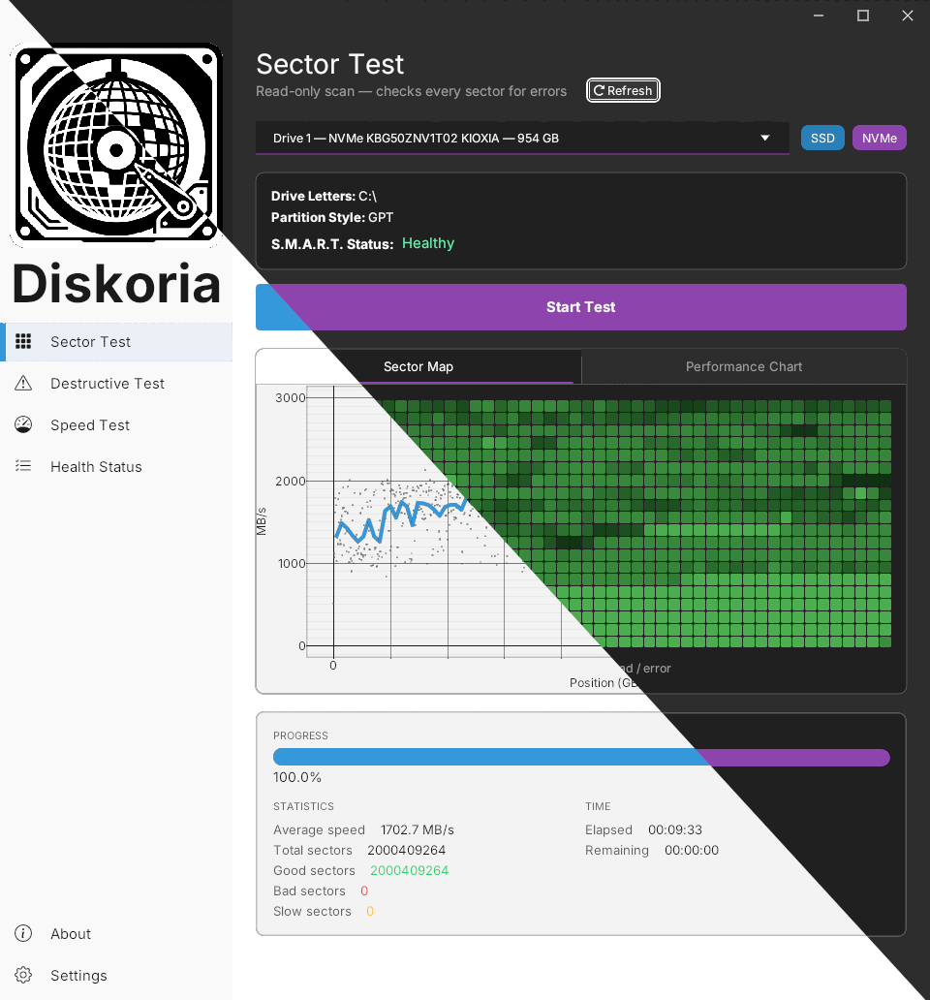
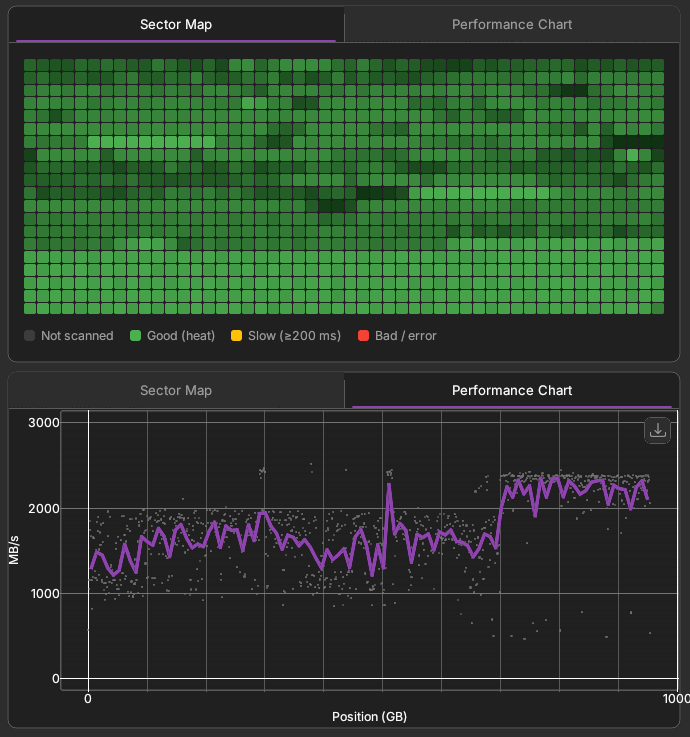
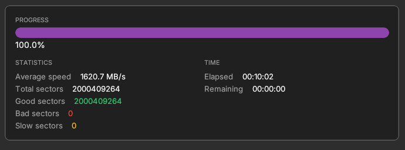
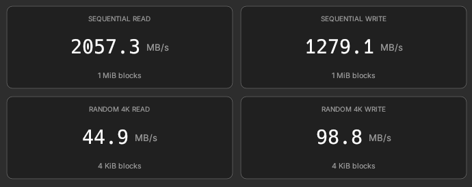
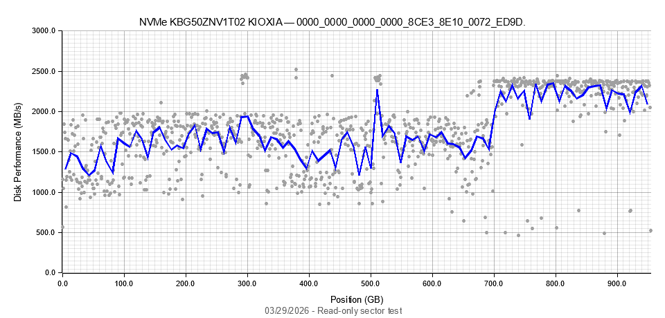

Diskoria is a portable Windows utility for sector scanning, full-disk verification, volume speed benchmarking, and SMART health checks — all in a clean, fast interface that requires no installation.

Four test modes cover the full spectrum of storage health visibility — from safe read-only scans to thorough destructive verification.
Sequentially reads every sector of a physical disk in 1 MiB aligned chunks. Reports good, slow (≥200 ms), and bad sectors with a real-time heatmap grid — without touching your data.
Read-only · Non-destructiveFile-based benchmarks on any volume: sequential read & write plus random 4 KiB I/O. Workload profiles are automatically tuned for NVMe, SATA, USB, and removable media.
Temp file onlyWrites a deterministic pattern to every sector, then reads it back to verify. Locks and dismounts all volumes before writing. Use to fully certify or sanitize a disk you intend to wipe.
Erases all dataSurfaces WMI-backed SMART health hints alongside each sector scan — status, partition layout, BitLocker awareness, and drive metadata visible at a glance.
WMI · Read-onlyClean, dense information — no wasted space, no popups, no installer.



Each of the 1000 cells represents a contiguous span of the disk's capacity in address order. Color encodes both correctness and speed in a single glance.
Performance charts can be exported as a PNG file — handy for record-keeping, comparisons over time, or sharing results with a team.

Three different approaches for three different scenarios. When in doubt, start with Sector Test.
| Test | Target | Access | Data risk | Best for |
|---|---|---|---|---|
| Sector Test | Physical disk | Read-only | None | Diagnosing media and cabling issues on a live system |
| Destructive Test | Physical disk | Read + Write all sectors | Complete data loss | Certifying refurbished drives or secure erasure before disposal |
| Speed Test | Volume (file) | Read + Write temp file | Temp file only | Benchmarking a volume's real-world throughput before deployment |